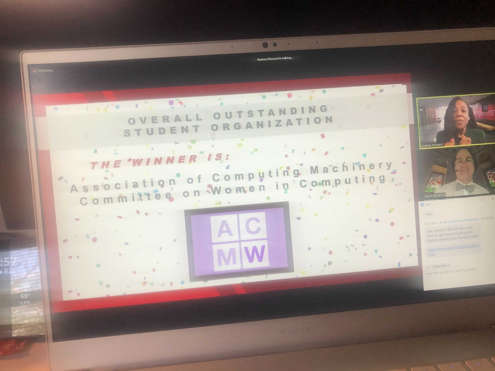

Seeing campus come alive after a winter of hibernation is my favorite part of spring. Other than that, I'm not a fan of the season since it comes with allergies, unpredictable weather, and a taste of the dreaded summer heat. It was only mid-seventies out the other day but running in the sunny weather had me so exhausted. I definitely prefer being cold over being too hot.
The semester is wrapping up with a lot of final projects due within the next week. I have to admit my motivation is slipping, and I might be getting a touch of senioritis (it's taken me a lot longer than I thought to get it). Maybe it's just because I had to order graduation tickets, reserve times to pick up my stoles and cords, and think about getting graduation pictures that's put me in the graduation mood. It's a lot of conflicting emotions as I'm torn between being excited to finally be done with college while also being really sad to leave.
As for my organization ACM-W, we found out we won Overall Outstanding Student Organization within the College of Engineering and KSA! It was a huge surprise and announced during a virtual ceremony this past Wednesday. We also won best K-12 Outreach which was amazing as well! Thinking about leaving ACM-W also made me really sad, as it's been an amazing community, and I never thought that I would have ended up being president for it.
To follow up on my previous blog, I did end up finding an apartment! While it wasn't my number one choice, it certainly was still a good one for the price and location I was looking for. Being able to put that issue to rest was a huge weight off my chest and made me more excited for when I move in June! It just made me remember what my mom says to me a lot:
I just need to remember that more often. Even the things that don't work out in the moment are normally resolved. I just have to be patient and learn to adjust if necessary.